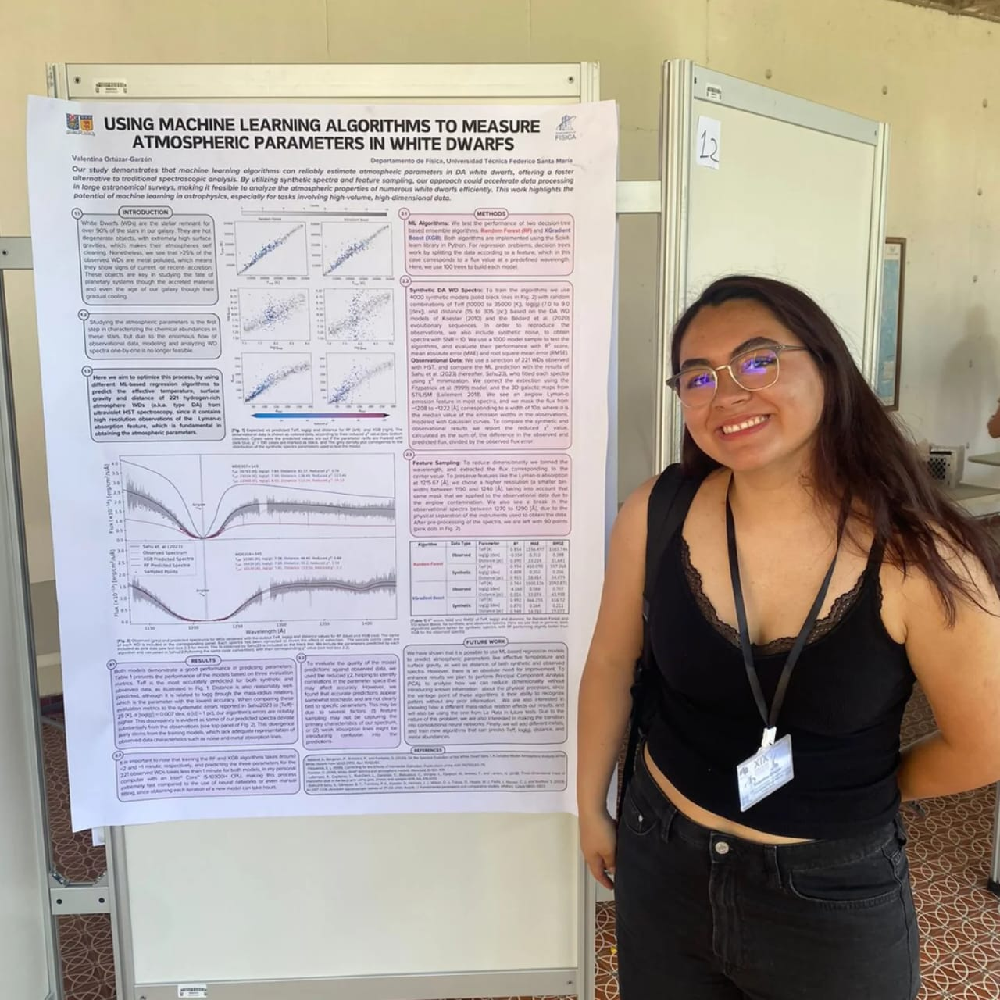
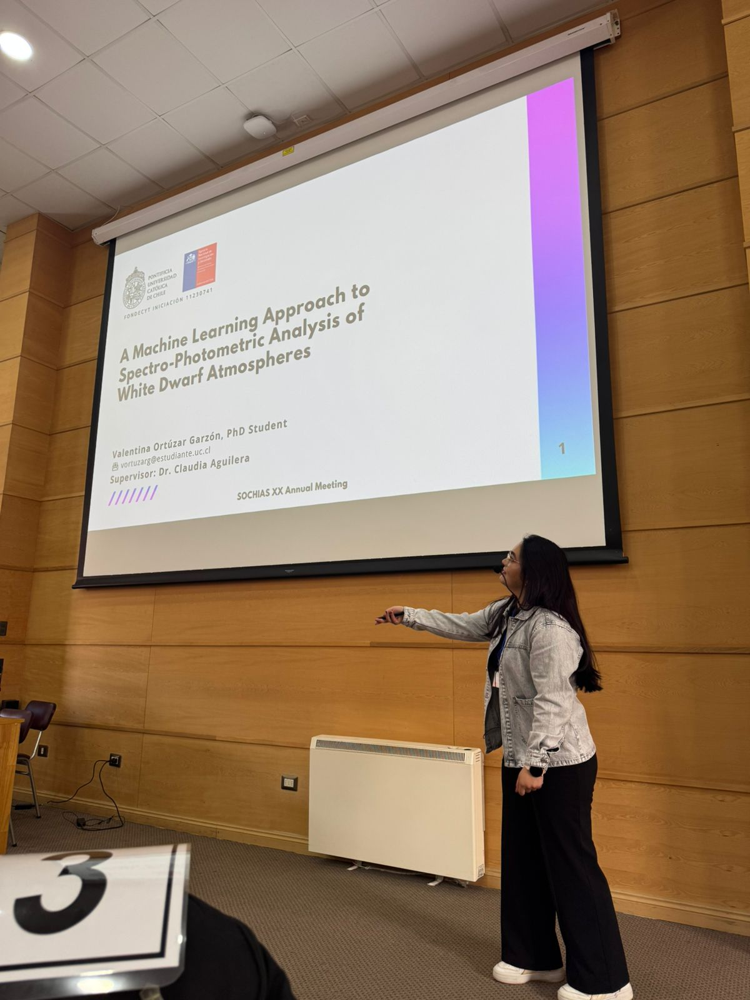
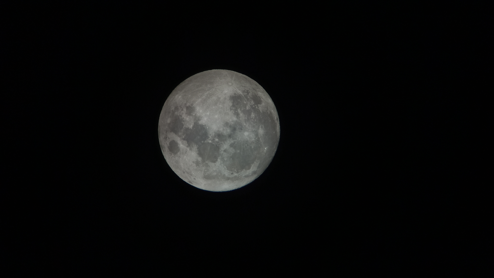
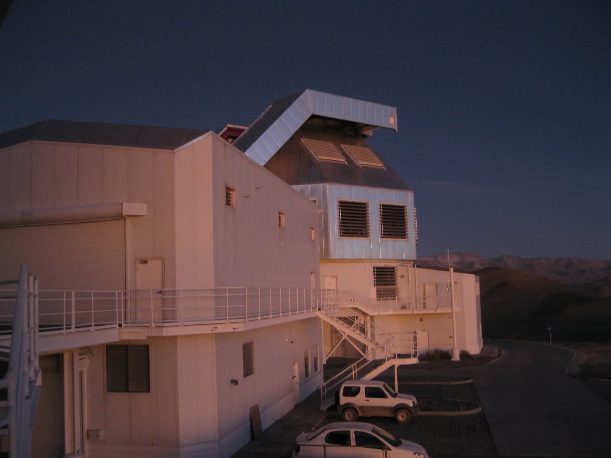
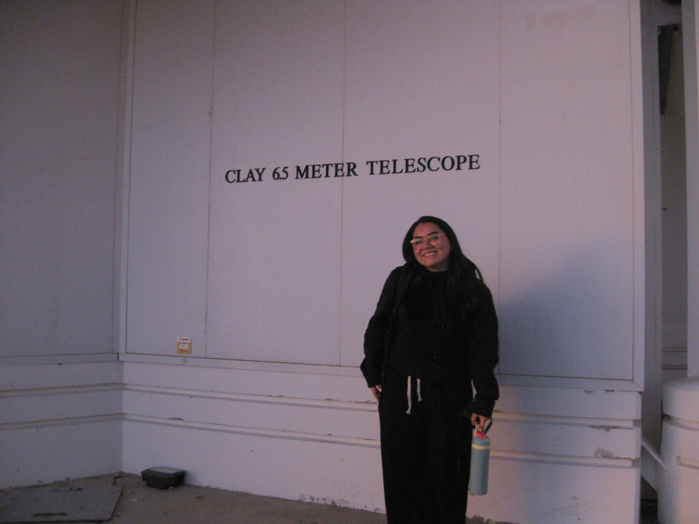
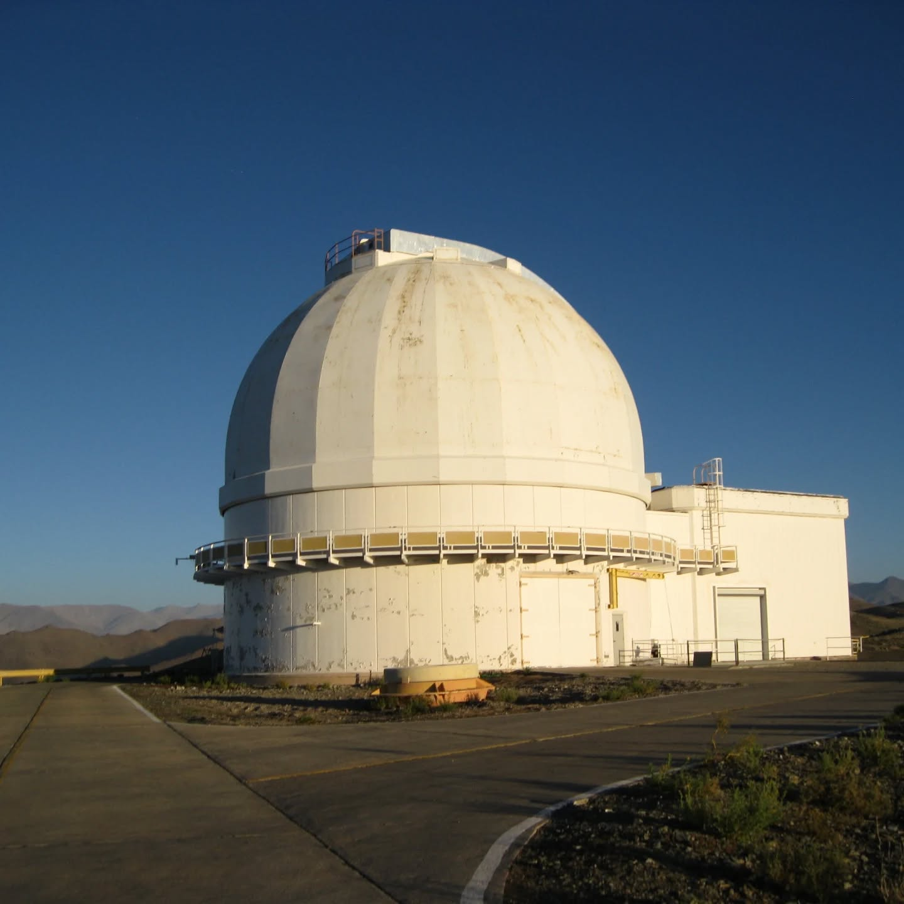
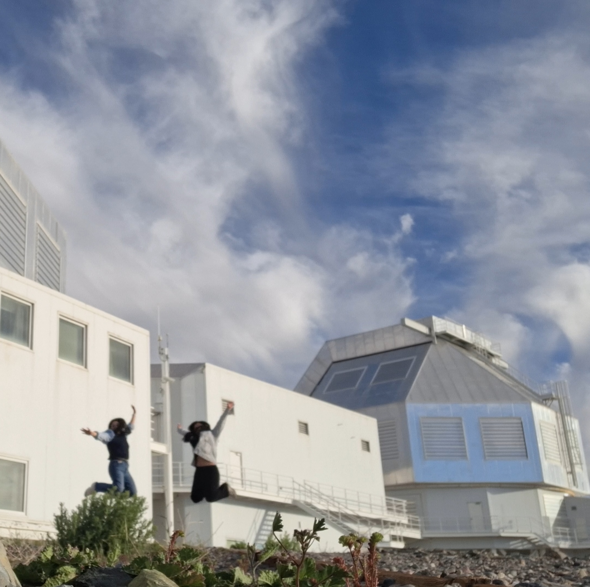
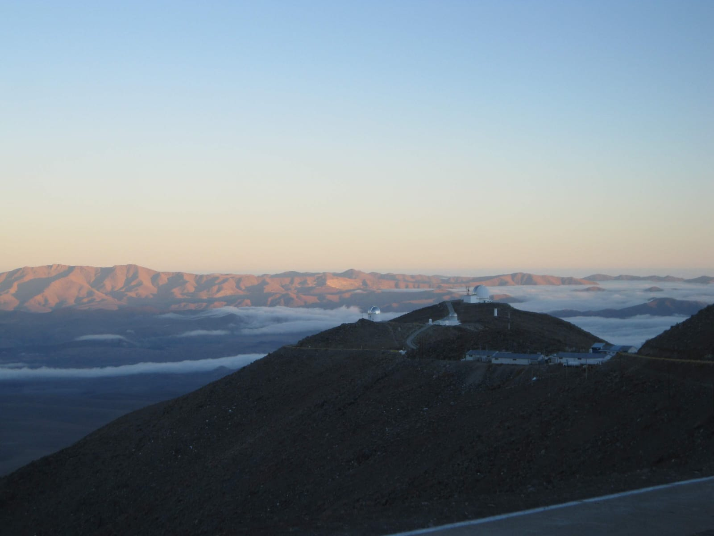

About me
I am a Ph.D. student at the Astrophysics Institute in Pontificia Universidad Católica de Chile, working under the supervision of Dr. Claudia Aguilera. My research focuses on dead stars, better known as white dwarfs. I especially like metal polluted systems, as they give us information about the fate of planetary systems.
Research
During my Ph.D. at Pontificia Universidad Católica de Chile I have been working on spectro-photometric analysis of white dwarf atmospheres with machine learning. Motivated by the large scale surveys upcoming in the following years, and under the supervision of Dr. Claudia Aguilera-Gómez, I have been working to develop an efficient machine learning based pipeline to estimate stellar parameters for white dwarfs, based on their photometric and/or spectroscopic observations.
This idea was born during the last year of my Bachelors, where I tested mass-radius relations of white dwarfs by predicting stellar parameters for UV spectroscopy of a small sample of white dwarfs, while working in Dr. Odette Toloza's group, at Universidad Técnica Federico Santa María.
Previously, I had the chance to work with Dr. Matthias Schreiber, on a one-semester long project that focused on modeling cataclysmic variable evolution using MESA to test a magnetic braking prescription (Ortúzar-Garzón et al. (2024)).
Publications
- Publication Title 1 - Journal/Conference, Year
- Publication Title 2 - Journal/Conference, Year
Contributed Talks and Posters
I have been very passionate about sharing my work in several seminars, workshops and conferences, both in English and Spanish. I have done this not only with a scientific purpose, but also to communicate science to a general audience, in student organized workshops and seminars focused on highlighting the role of women in STEM.
-

Talk Title 1 Conference, Year -

Poster Title 1 Conference, Year
Resume
Gallery





